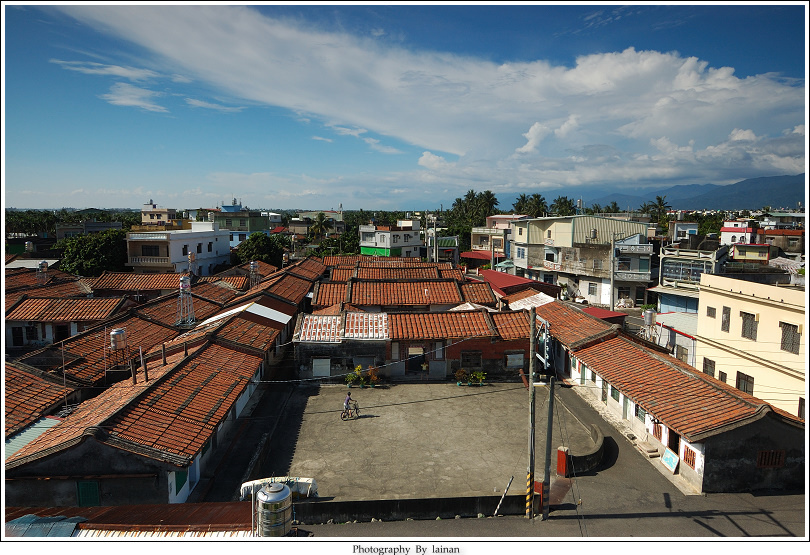

南部夥房與中、北部伙房:
臺灣北中南在聚落地理學上早就有北部多丘陵多散村，
南部多平原多集村，中部尤其是彰化(一般都說在大甲溪與濁水溪之間)即有夾在中間，
以水文、山麓為依靠的帶狀連村，因此早在民國50年代，從美濃周刊與臺中東勢的山城周刊，
即在文字上，有以六堆客家民居用「夥房」， 中部山城石岡、東勢客家民居用「伙房」的專門用語，
加上苗栗公館鄉的徐家大伙房與劉舉人伙房的地圖標記，使得集村的夥房與散村的伙房，
形成一個南北客家民居建築形式不同的區分。
